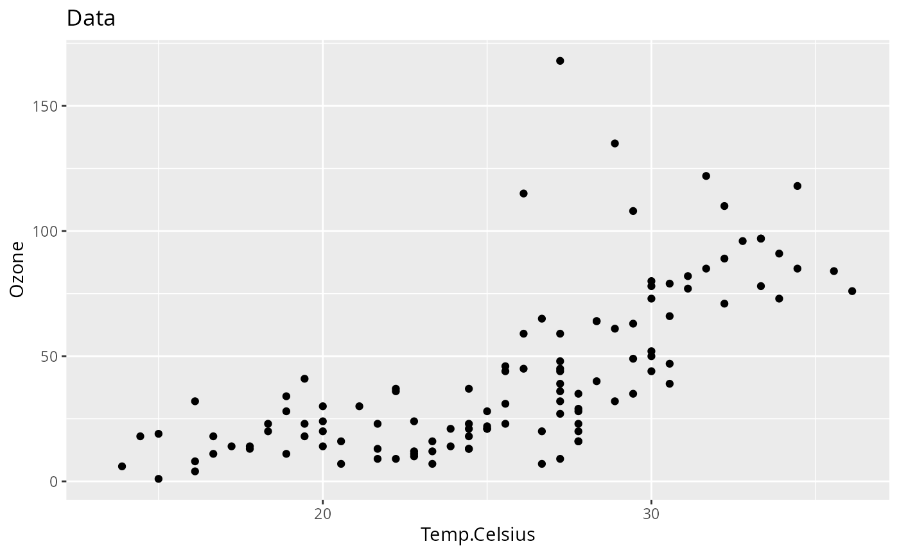
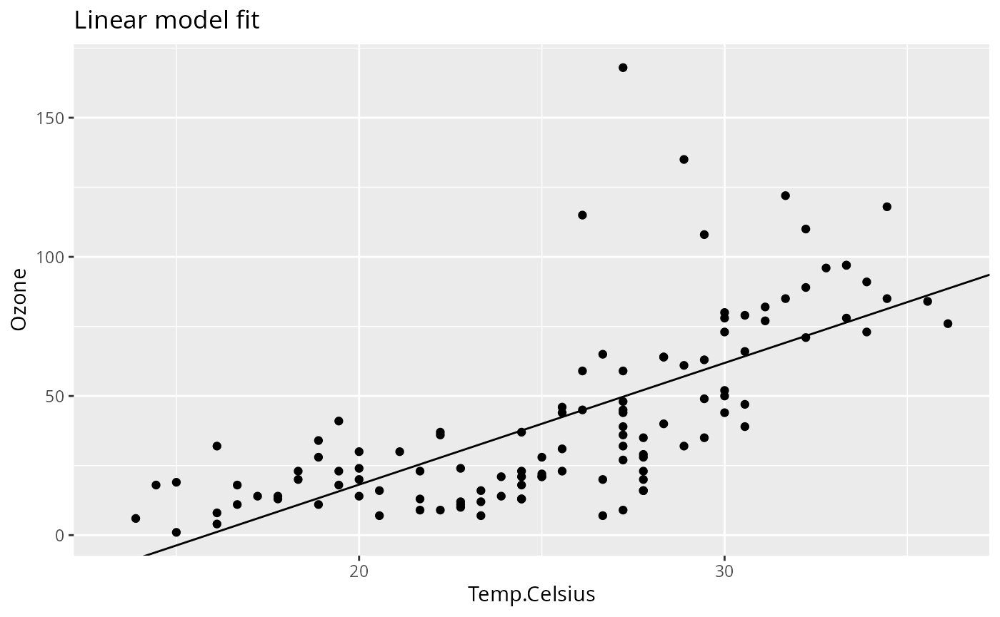
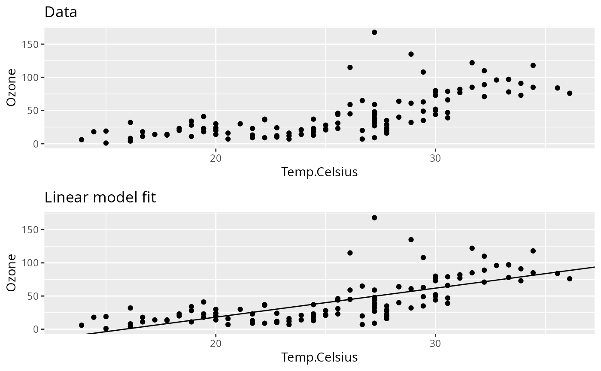

Generally speaking, one should keep pipeline steps as simple as possible, basically following the principle “one step, one task”. While splitting up analysis steps into multiple functions naturally becomes hard to manage with a growing number of functions, with {pipeflow}, which manages all function and parameter dependencies for you, this feels rather easy1.
Following this principle, most of the pipeline steps will carry intermediate results while only a few steps contain the final output we are interested in.
This vignette shows how to conveniently tag and collect those final outputs as well as how to filter pipelines via {pipeflow}s view functionality.
Tagging steps
Tags let you label steps with meaningful keywords so you can later
filter the pipeline by topic, stage, or output type. Tags can be set
during pipeline creation or later using pip_set_tags().
library(pipeflow)
pip <- pip_new("my-pip") |>
pip_add(
"data",
function(data = airquality) data
) |>
pip_add("data_prep",
function(df = ~data) {
df[, "Temp.Celsius"] <- (df[, "Temp"] - 32) * 5 / 9
df
},
tags = "data" # <-- set 'data' tag
) |>
pip_add(
"data_summary",
function(data = ~data_prep,
xVar = "Temp.Celsius",
yVar = "Ozone") {
format(summary(data[, c(xVar, yVar)])) |>
as.data.frame(row.names = NA)
},
tags = c("data", "summary") # <-- set 'data' and 'summary' tags
) |>
pip_add(
"data_plot",
function(data = ~data_prep,
xVar = "Temp.Celsius",
yVar = "Ozone") {
require(ggplot2, quietly = TRUE)
ggplot(data) +
geom_point(aes(.data[[xVar]], .data[[yVar]])) +
labs(title = "Data")
},
tags = c("data", "plot") # <-- set 'data' and 'plot' tags
) |>
pip_add(
"model_fit",
function(data = ~data_prep,
xVar = "Temp.Celsius",
yVar = "Ozone") {
lm(paste(yVar, "~", xVar), data = data)
},
tags = c("model", "fit") # <-- set 'model' and 'fit' tags
) |>
pip_add(
"model_summary",
function(fit = ~model_fit) {
summary(fit) |>
coefficients() |>
as.data.frame()
},
tags = c("model", "summary") # <-- set 'model' and 'summary' tags
) |>
pip_add(
"model_plot",
function(model = ~model_fit,
data_plot = ~data_plot,
xVar = "Temp.Celsius",
yVar = "Ozone") {
coeffs <- coefficients(model)
data_plot +
geom_abline(intercept = coeffs[1], slope = coeffs[2]) +
labs(title = "Linear model fit")
},
tags = c("model", "plot") # <-- set 'model' and 'plot' tags
)We used two families of tags:
"data"/"model" to distinguish the topic, and
"summary"/"plot"/"fit" for the
output type. Whenever tags are defined, they are shown in the pipeline
overview (see rightmost column):
pip
# <pipeflow> my-pip (7 steps)
# ---------------------------
# step params depends state tags
# 1: data data new
# 2: data_prep df data new data
# 3: data_summary data,xVar,yVar data_prep new data,summary
# 4: data_plot data,xVar,yVar data_prep new data,plot
# 5: model_fit data,xVar,yVar data_prep new model,fit
# 6: model_summary fit model_fit new model,summary
# 7: model_plot model,data_plot,xVar,yVar model_fit,data_plot new model,plot
# ---------------------------
# <ready> last run: neverBefore showing how to make use of the tags, let’s run the pipeline and inspect the output individually as we did in the previous vignettes.
pip_run(pip)
# info [2026-09-22 06:07:47.033 UTC]: Starting run of pipeflow 'my-pip'
# info [2026-09-22 06:07:47.034 UTC]: Step 1/7 data
# info [2026-09-22 06:07:47.034 UTC]: Step 2/7 data_prep
# info [2026-09-22 06:07:47.036 UTC]: Step 3/7 data_summary
# info [2026-09-22 06:07:47.039 UTC]: Step 4/7 data_plot
# info [2026-09-22 06:07:47.575 UTC]: Step 5/7 model_fit
# info [2026-09-22 06:07:47.578 UTC]: Step 6/7 model_summary
# info [2026-09-22 06:07:47.597 UTC]: Step 7/7 model_plot
# info [2026-09-22 06:07:47.603 UTC]: Finished run of pipeflow 'my-pip'
pip
# <pipeflow> my-pip (7 steps)
# ---------------------------
# step params depends state out
# 1: data data done <data.frame[153x6]>
# 2: data_prep df data done <data.frame[153x7]>
# 3: data_summary data,xVar,yVar data_prep done <data.frame[7x2]>
# 4: data_plot data,xVar,yVar data_prep done <ggplot2::ggplot>
# 5: model_fit data,xVar,yVar data_prep done <lm[13]>
# 6: model_summary fit model_fit done <data.frame[2x4]>
# 7: model_plot model,data_plot,xVar,yVar model_fit,data_plot done <ggplot2::ggplot>
# tags
# 1:
# 2: data
# 3: data,summary
# 4: data,plot
# 5: model,fit
# 6: model,summary
# 7: model,plot
# ---------------------------
# <ready> last run: 2026-09-22 08:07:47
pip[["data_plot", "out"]]
pip[["model_plot", "out"]]
Flat output collection
pip_collect() returns all step outputs as a flat named
list2.
out <- pip_collect(pip)
names(out)
# [1] "data" "data_prep" "data_summary" "data_plot" "model_fit" "model_summary"
# [7] "model_plot"Filtered output using tags
To collect only the output of steps with a specific tag, we use
pip_view(), which is {pipeflow}’s general-purpose function
for filtering pipelines, and then call pip_collect() on the
filtered pipeline view. For example, to collect only the plots, we can
filter by the plot tag.
pip_view(pip, tags = "plot") # or pip[tags %like% "plot"]
# <pipeflow_view> my-pip view (2 of 7 steps)
# ------------------------------------------
# step params depends state out tags
# 1: data_plot data,xVar,yVar data_prep done <ggplot2::ggplot> data,plot
# 2: model_plot model,data_plot,xVar,yVar model_fit,data_plot done <ggplot2::ggplot> model,plot
# ------------------------------------------
# <ready> last run: 2026-09-22 08:07:47
pip |>
pip_view(tags = "plot") |>
pip_collect() |>
gridExtra::grid.arrange(grobs = _, nrow = 2)
Grouped output via views
Grouped output could be achieved by composing pip_view()
with pip_collect(). For example, to collect outputs grouped
by topic ("data" and "model"):
grouped <- list(
data = pip_view(pip, tags = "data") |> pip_collect(),
model = pip_view(pip, tags = "model") |> pip_collect()
)
names(grouped[["data"]])
# [1] "data_prep" "data_summary" "data_plot"
names(grouped[["model"]])
# [1] "model_fit" "model_summary" "model_plot"However, since this scenario is so common, since version
0.4.0 the pip_collect function natively
supports grouping via a by parameter, which allows to
simplify the above call as follows.
grouped <- pip_collect(pip, by = "tags")[c("data", "model")]
names(grouped[["data"]])
# [1] "data_prep" "data_summary" "data_plot"
names(grouped[["model"]])
# [1] "model_fit" "model_summary" "model_plot"In addition, you can now also return the results as a compact table.
pip_collect(pip, by = "tags", as.table = TRUE)
# tags out
# <char> <list>
# 1: data <list[3]>
# 2: summary <list[2]>
# 3: plot <list[2]>
# 4: model <list[3]>
# 5: fit <list[1]>For more details see ?pip_collect.